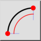

2 amp;punktid ja pikkus
Tööriistariba / ikoon:


Menüü: amp;Joonista > amp;Arc > 2 amp;punktid ja pikkus
Otsetee: A, L
Käsklused: arclength | al
Tööriistariba / ikoon:


Joonistab kaare alguspunkti, lõpp-punkti ja kaare pikkuse abil.